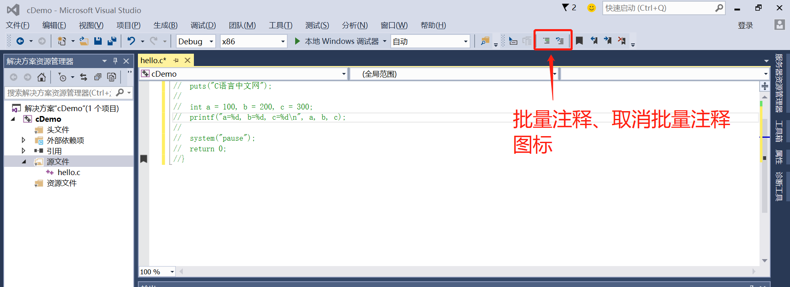

【本文结构】
- 一个完整的编程过程（编写代码并生成程序，针对VS2015）
- 源文件
- 编译和链接
- 主流C语言编译器
- IDE（集成开发环境）
- 工程/项目
- 编写源文件：“源文件”完整的称呼是“源代码文件”，这是编程的主要工作，我们要保证代码的语法100%正确，不能有任何差错；
- 编译：将源文件转换为目标文件；
- 编译（Compile）
- 在上方菜单栏中选择“生成 --> 编译”，就完成了 hello.c 源文件的编译工作
- Ctrl+F7
- 经过编译产生的中间文件专业称呼是目标文件（Object File）。在 VS 和 VC 下，目标文件的后缀都是.obj。
- 链接：将目标文件和系统库组合在一起，转换为可执行文件；
链接（Link）
- 在菜单栏中选择“生成 --> 仅用于项目 --> 仅链接 cDemo”，就完成了 hello.obj 的链接工作。（项目名称为cDemo）
- 本项目中只有一个目标文件，链接的作用是将 hello.obj 和系统组件（专业讲是静态链接库）结合起来，形成可执行文件，在 VS 和 VC 下，可执行文件的后缀都是.exe。如果有多个目标文件，这些目标文件之间还要相互结合。
- 再次打开项目目录下的 Debug 文件夹，会看到一个名为cDemo.exe的文件，这就是最终生成的可执行文件，就是我们想要的结果。
- 双击 cDemo.exe 运行，并没有输出“C语言中文网”几个字，而是会看到一个黑色窗口一闪而过。这是因为，程序输出“C语言中文网”后就运行结束了，窗口会自动关闭，时间非常短暂，所以看不到输出结果，只能看到一个“黑影”。
- 运行：可以检验代码的正确性。
- 不过 VS 提供了一种更加快捷的方式，可以一键完成编译、链接、运行三个动作，点击菜单栏中的“运行”按钮，或者按下F5键就能做到这一点。
- Ctrl+F5
- 如果我们的代码中没有添加system("pause");暂停语句，点击“运行”按钮，或者按下F5键后程序依然会一闪而过，只能看到一个“黑影”。
- 如果想让程序自动暂停，可以按下Ctrl+F5组合键，这样程序就不会一闪而过了；换句话说，按下Ctrl+F5键，VS 会自动在程序的最后添加暂停语句。
- 单行注释（line comment）
- C语言的注释符号：//
- 块注释（block comment）
- 以 /* 开始、以 */ 结束
- Visual Studio中
- 批量注释: Ctrl+K+C
- 取消注释: Ctrl+K+U

- 控制台程序（Console Application）
- 在本教程的基础部分，教大家编写的程序都是这样的“黑窗口”，与我们平时使用的软件不同，它们没有漂亮的界面，没有复杂的功能，只能看到一些文字，这就是控制台程序（Console Application），它与DOS非常相似，早期的计算机程序都是这样的。
- 图形用户界面（Graphical User Interface）程序
- 控制台程序虽然看起来枯燥无趣，但是它非常简单，适合入门，能够让大家学会编程的基本知识；只有夯实基本功，才能开发出健壮的GUI（Graphical User Interface，图形用户界面）程序，也就是带界面的程序。
- 用来保存代码的文件就叫做源文件（Source File）。
- 每种编程语言的源文件都有特定的后缀，以方便被编译器识别，被程序员理解。源文件后缀大都根据编程语言本身的名字来命名，
- C语言源文件的后缀是.c；
- C++语言（C Plus Plus）源文件的后缀是.cpp；
- Java 源文件的后缀是.java；
- Python 源文件的后缀是.py；
- JavaScript 源文件后置是.js。
- 源文件其实就是纯文本文件，它的内部并没有特殊格式， 源文件的后缀仅仅是为了表明该文件中保存的是某种语言的代码（例如.c文件中保存的是C语言代码），这样程序员更加容易区分，编译器也更加容易识别，它并不会导致该文件的内部格式发生改变。
- C++ 是站在C语言的肩膀上发展起来的，是在C语言的基础上进行的扩展，C++ 包含了C语言的全部内容（请猛击《C语言和C++到底有什么关系》一文了解更多），将C语言代码放在.cpp文件中不会有错，很多初学者都是这么做的，很多大学老师也是这么教的。但是，我还是强烈建议将C语言代码放在.c文件中，这样能够更加严格地遵循C语言的语法，也能够更加清晰地了解C语言和C++的区别。
- 不管我们编写的代码有多么简单，都必须经过「编译 --> 链接」的过程才能生成可执行文件：
- 编译就是将我们编写的源代码“翻译”成计算机可以识别的二进制格式，它们以目标文件的形式存在；
- 链接就是一个“打包”的过程，它将所有的目标文件以及系统组件组合成一个可执行文件。
- 如果不是特别强调，一般情况下我们所说的“编译器”实际上也包括了链接器。
- 我们平时所说的程序，是指双击后就可以直接运行的程序，这样的程序被称为可执行程序（Executable Program）。
- 在 Windows 下，可执行程序的后缀有.exe和.com（其中.exe比较常见）；
- 可执行程序的内部是一系列计算机指令和数据的集合，它们都是二进制形式的，CPU 可以直接识别，毫无障碍；但是对于程序员，它们非常晦涩，难以记忆和使用。

- 在计算机发展的初期，程序员就是使用这样的二进制指令来编写程序的，那个拓荒的年代还没有编程语言。
- 编译（Compile）
- 编译器（Compiler）： C语言代码由固定的词汇按照固定的格式组织起来，简单直观，程序员容易识别和理解，但是对于CPU，C语言代码就是天书，根本不认识，CPU只认识几百个二进制形式的指令。这就需要一个工具，将C语言代码转换成CPU能够识别的二进制指令，也就是将代码加工成 .exe 程序的格式；这个工具是一个特殊的软件，叫做编译器。（Compiler）。
- 编译（Compile）： 编译器能够识别代码中的词汇、句子以及各种特定的格式，并将他们转换成计算机能够识别的二进制形式，这个过程称为编译（Compile）。
- 编译也可以理解为“翻译”，类似于将中文翻译成英文、将英文翻译成象形文字，它是一个复杂的过程，大致包括词法分析、语法分析、语义分析、性能优化、生成可执行文件五个步骤，期间涉及到复杂的算法和硬件架构。对于学计算机或者软件的大学生，“编译原理”是一门专业课程，有兴趣的读者请自行阅读《编译原理》一书，这里我们不再展开讲解。（注意：不了解编译原理并不影响我们学习C语言，我也不建议初学者去钻研编译原理，贪多嚼不烂，不要把自己绕进去。）
- 编译器可以 100% 保证你的代码从语法上讲是正确的，因为哪怕有一点小小的错误，编译也不能通过，编译器会告诉你哪里错了，便于你的更改。
- C语言代码经过编译以后，并没有生成最终的可执行文件（.exe 文件），而是生成了一种叫做目标文件（Object File）的中间文件（或者说临时文件）。
- 目标文件也是二进制形式的，它和可执行文件的格式是一样的。
- 对于 Visual C++，目标文件的后缀是.obj；
- 对于 GCC，目标文件的后缀是.o。
- 链接（Link）
- 目标文件经过链接（Link）以后才能变成可执行文件。既然目标文件和可执行文件的格式是一样的，为什么还要再链接一次呢，直接作为可执行文件不行吗？
- 不行的！因为编译只是将我们自己写的代码变成了二进制形式，它还需要和系统组件（比如标准库、动态链接库等）结合起来，这些组件都是程序运行所必须的。
- 链接（Link）其实就是一个“打包”的过程，它将所有二进制形式 的目标文件和系统组件组合成一个可执行文件。完成链接的过程也需要一个特殊的软件，叫做链接器（Linker）。
- 随着我们学习的深入，我们编写的代码越来越多，最终需要将它们分散到多个源文件中，编译器每次只能编译一个源文件，生成一个目标文件，这个时候，链接器除了将目标文件和系统组件组合起来，还需要将编译器生成的多个目标文件组合起来。
- 再次强调，编译是针对一个源文件的，有多少个源文件就需要编译多少次，就会生成多少个目标文件。

- 桌面操作系统
- Windows 下常用的是微软开发的 Visual C++，它被集成在 Visual Studio 中，一般不单独使用（VC 6.0 的编译器也是 Visual C++）；
- Linux 下常用的是 GUN 组织开发的 GCC，很多 Linux 发行版都自带 GCC；
- Mac 下常用的是 LLVM/Clang，它被集成在 Xcode 中（Xcode 以前集成的是 GCC，后来由于 GCC 的不配合才改为 LLVM/Clang，LLVM/Clang 的性能比 GCC 更加强大）。
- 由于当前 LLVM 项目主要在 Apple 的主推下发展的，所以在 macOS中，Clang 编译器又被称为 Apple LLVM 编译器。
- Visual Studio Community 2017 加入了对 Clang 编译器的支持，官方称之为——Clang with Microsoft CodeGen，当前版本基于的是 Clang 3.8。为了方便描述，本教程后面涉及 Visual Studio 集成开发环境下的 Clang 编译器简称为 VS-Clang 编译器。
- 嵌入式系统
- 而在嵌入式系统方面，可用的C语言编译器就非常丰富了，比如：
- 用于 Keil 公司 51 系列单片机的 Keil C51 编译器；
- 当前大红大紫的 Arduino 板搭载的开发套件，可用针对 AVR 微控制器的 AVR GCC 编译器；
- ARM 自己出的 ADS（ARM Development Suite）、RVDS（RealView Development Suite）和当前最新的 DS-5 Studio；
- DSP 设计商 TI（Texas Instruments）的 CCS（Code Composer Studio）；
- DSP 设计商 ADI（Analog Devices，Inc.）的 Visual DSP++ 编译器，等等。
- 通常，用于嵌入式系统开发的编译工具链都没有免费版本，而且一般需要通过国内代理进行购买。所以，这对于个人开发者或者嵌入式系统爱好者而言是一道不低的门槛。
- 不过 Arduino 的开发套件是可免费下载使用的，并且用它做开发板连接调试也十分简单。Arduino 所采用的C编译器是基于 GCC 的。
- 集成开发环境（IDE，Integrated Development Environment）： 就是一系列开发工具的组合套装。 在实际开发中，我一般也是使用集成开发环境，而不是单独地使用编译器。
- 有时候，也会将C语言集成开发环境称作“C语言编译器”或者“C语言编程软件”。
- Windows 下对于初学者，推荐使用 VS2015。最好不用使用 VS2017，有点坑初学者。
- Linux 下可以不使用 IDE，只使用 GCC 编译器和一个文本编辑器（例如 Gedit）即可，这样对初学者理解C语言程序的生成过程非常有帮助，请参考：Linux GCC简明教程（使用GCC编写C语言程序）
- Mac OS 下推荐使用 Apple 官方开发的 Xcode，在 APP Store 即可下载，具体请参见：Xcode简明教程（使用Xcode编写C语言程序） 。另外，Visual Studio 也推出了 Mac 版本，已经习惯了 Visual Studio 的用户可以高兴一把了。
- 在实际开发中，程序员都是将这些代码分门别类地放到多个源文件中（ 如果将这些代码都放到一个源文件中，那将会让人崩溃，不但源文件打开速度极慢，代码的编写和维护也将变得非常困难）。除了这些成千上万行的代码，一个程序往往还要包含图片、视频、音频、控件、库（也可以说框架）等其它资源，它们也都是一个一个的文件。 为了有效地管理这些种类繁杂、数目众多的文件，我们有理由把它们都放到一个目录（文件夹）下，并且这个目录下只存放与当前程序有关的资源。
- 实际上 IDE 也是这么做的， 这个为当前程序配备的专用文件夹，在 IDE 中也有一个专门的称呼，叫做“Project”，翻译过来就是“工程”或者“项目”。
- 程序的类型
- “程序”是一个比较宽泛的称呼，它可以细分为很多种类，例如：
- 有的程序不带界面，完全是“黑屏”的，只能输入一些字符或者命令，称为控制台程序（Console Application），例如 Windows 下的 cmd.exe，Linux 或 Mac OS 下的终端（Terminal）。
- 有的程序带界面，看起来很漂亮，能够使用鼠标点击，称为GUI程序（Graphical User Interface Program），例如 QQ、迅雷、Chrome 等。
- 有的程序不单独出现，而是作为其它程序的一个组成部分，普通用户很难接触到它们，例如静态库、动态库等。
- 不同的程序对应不同的工程类型（项目类型），使用 IDE 时必须选择正确的工程类型才能创建出我们想要的程序。换句话说，IDE 包含了多种工程类型，不同的工程类型会创建出不同的程序。
- 控制台程序对应的工程类型为“Win32控制台程序（Win32 Console Application）”，GUI 程序对应的工程类型为“Win32程序（Win32 Application）”。
- 控制台程序是 DOS 时代的产物了，它没有复杂的功能，没有漂亮的界面，只能看到一些文字，虽然枯燥无趣，也不实用，但是它非常简单，不受界面的干扰，所以适合入门，我强烈建议初学者从控制台程序学起。等大家对编程掌握的比较熟练了，能编写上百行的代码了，再慢慢过渡到 GUI 程序。